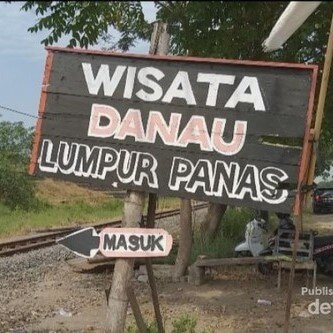
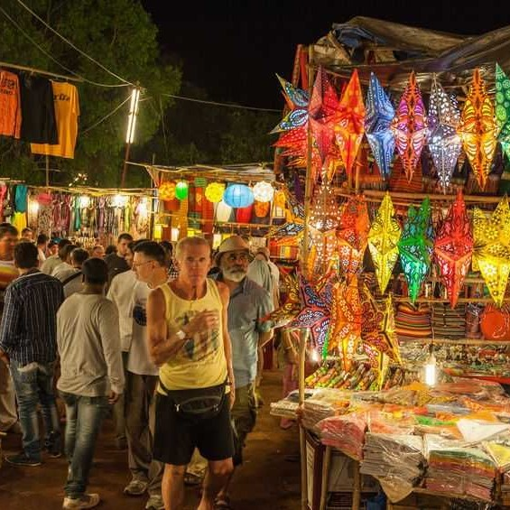
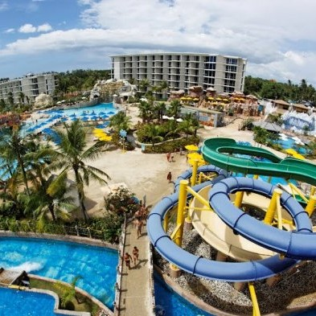
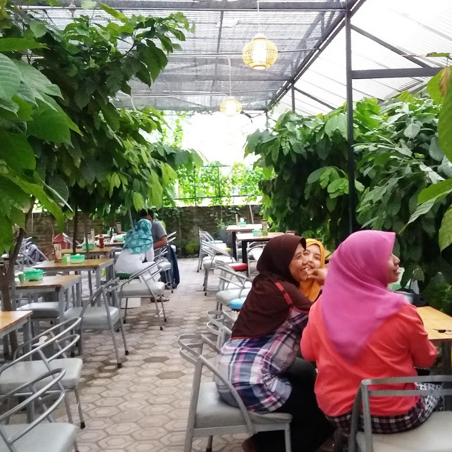
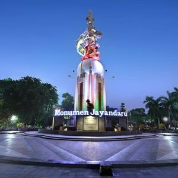
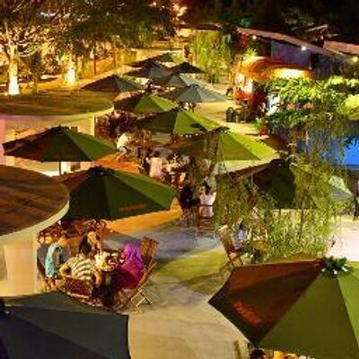
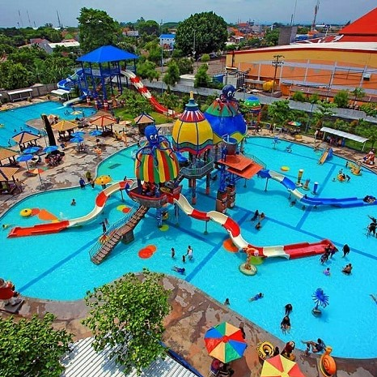
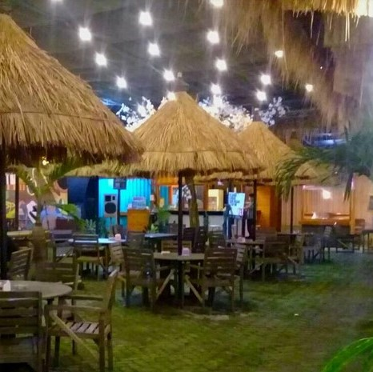

Lapindo Hot Mud Tour
If you are attracted to enjoy it, you can have a visit at Lumpur Lapindo in Porong district, Sidoarjo. There is no admission fee (the parking service is charged) so that you can explore the place anytime you want. We recommend you come late in the afternoon to see the best view.
Mpu Tantular Museum
For those loving digging some knowledge, dropping in Mpu Tantular Museum to learn the local culture and history would be a nice pick. The visitors will be charged about 3,000 IDR to 5,000 IDR. The opening hours are from 8 am to 5 pm.

Gading Fajar Night Market
To feel the city’s night vibrancy, you can hit Gading Fajar night market. At an area spanning 1 kilometer, you can discover the hustle and bustle of the marketplace. Be sure to know the opening hours (from 4 pm to 11:30 pm).

Jungle Water Park
Jungle Water Park is such a new attraction in Sidoarjo that deserves a visit. The opening hours of this busy place are from 7 am to 6 pm, and the admission fee ranges from 10,000 IDR to 15,000 IDR.

Kebun Cokelat, Balong Bendo
Kebun Cokelat is a coffee shop located on Jalan Raya Balong Bendo number 151. It offers a wide array of mouth-watering foods you can opt for such as mi gobyor, mi cower, and much more. For ice cream lovers, just order your favorite listed on the menu.

Sidoarjo’s Town Square and Monument
Sidoarjo’s town square, sitting elegantly in the hub of the city, is such an ideal place to spend the weekends and holidays. The green space is filled with well-kept grass and giant palms so that the visitors could take a chill for hours.

Pazkul Kahuripan Nirwana
Seeking a cool spot for hanging out? Do not miss the Pazkul Kahuripan Nirwana. It is a culinary market with a food court concept with Go Green exterior; the shady tables with umbrellas, Green Park, and romantic garden lights. We recommend you visit at 3 pm.

Suncity Water Park
Do you love playing with water? Do not forget to have a visit to Suncity Water Park, located on Jalan Pahlawan number 1 Sidoarjo. The opening hours of Suncity Waterpark are from 8 am to 6 pm. The entrance ticket is 25,000 IDR (from Monday to Friday) and 30,000 IDR on the weekends.

Prambon Forest
If you travel with kids, Prambon Forest would be a nice alternative. The attraction situated in Prambon is an educative recreational park combining to boost your children’s intelligence, physical condition, and mental health.